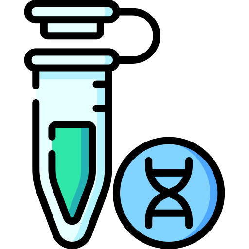

Theme System Test
Available Themes
Brainstorm

DNA
Flask
Oil
Test Links
Open Main Page (Among Us)
Open Console Page
Instructions
Open the console page
Go to the "Question Sets" section
Click "Change Theme" for any question set
Select a theme from the modal
Check that the theme icon appears in both the console table and the main page